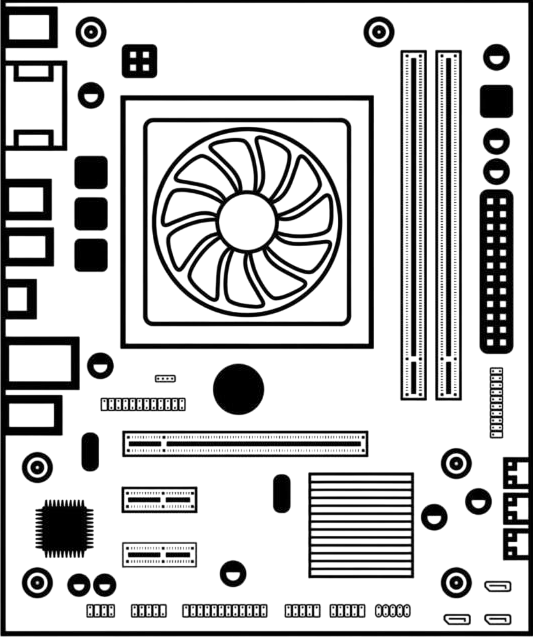

O que é essa página?
Seja muito bem-vinda à nossa página interativa de hardware! Aqui, desvendamos os mistérios do coração do computador de um jeito super simples e visual.
No centro da tela, você encontra a imagem de uma placa-mãe, onde você pode descobrir
a função dos componentes básicos de um computador, apenas passando o cursor do mouse
sobre o componente que deseja conhecer.
Assim que você posiciona o mouse em cima de uma peça (como o
processador, os slots de memória ou os conectores traseiros),
uma caixinha explicativa aparece na hora na tela, mostrando o
nome do componente, um ícone ilustrativo e um texto amigável
contando qual é a função real dele no circuito.
É uma forma prática, divertida e totalmente visual de aprender como o
seu computador funciona por dentro! Explore a placa, passe o mouse
pelos componentes e vire uma expert em hardware num piscar de olhos.

Processador
É o centro de controle e execução. A função dele no circuito é receber os dados brutos, interpretar as instruções dos programas e realizar os cálculos lógicos e matemáticos necessários para que o sistema operacional e os softwares funcionem.
Entradas Sata
HD e SSD
Onde são conctados os dispositivos de armazenamento, podendo ser um SSD ou um HD. Sua função é a retenção de dados a longo prazo (memória não-volátil). É aqui que são armazenados os arquivos que precisam ser mantidos mesmo quando o computador é desligado.
Memória Ram
Sua função é servir de espaço de trabalho ultra rápido para o processador. Ela armazena temporariamente os dados dos programas que estão executando ativamente no momento. Sem ela, o processador precisaria buscar tudo direto no armazenamento, o que deixaria o computador extremamente lento.
Slots de Expansão
Os slots de expansão servem para adicionar novas funções ou melhorar o desempenho do computador, permitindo conectar novas peças direto no circuito da placa mãe. Entre as principais placas utilizadas estão a placa de vídeo, a função dela é o processamento paralelo focado em gráficos e imagens; e a placa de rede, componente que serve para conectar o computador à internet e a outros aparelhos.
Painel Traseiro
Sua função é fazer a ponte de comunicação externa. Ele traduz os sinais elétricos vindos de periféricos para dentro dos circuitos da placa-mãe, e envia dados para fora.
Fonte de Alimentação
A função dessas conexões é receber a corrente elétrica da fonte e distribuí-la de forma regulada e dividida em diferentes tensões (voltagens) para as trilhas da placa-mãe, garantindo que cada componente receba a energia exata para operar sem queimar.
Placa-Mãe
A placa-mãe é a peça central e mais importante de qualquer computador, funcionando como o verdadeiro sistema nervoso da máquina. Sua principal função é conectar e permitir a comunicação entre todos os outros componentes essenciais, como o processador, a memória RAM, as placas de vídeo e os discos de armazenamento. Além de servir como essa grande base de encaixe, ela também é responsável por distribuir a energia elétrica vinda da fonte de maneira controlada para cada parte do sistema e por abrigar todas as conexões externas que usamos no dia a dia, como as portas USB e as saídas de áudio. Sem ela, os componentes seriam apenas peças isoladas e incapazes de trabalhar juntas, tornando a placa-mãe a base fundamental que transforma circuitos espalhados em um computador funcional e inteligente.